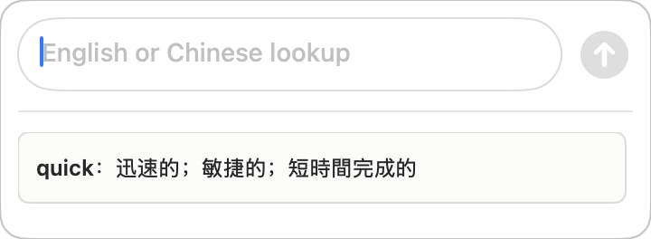
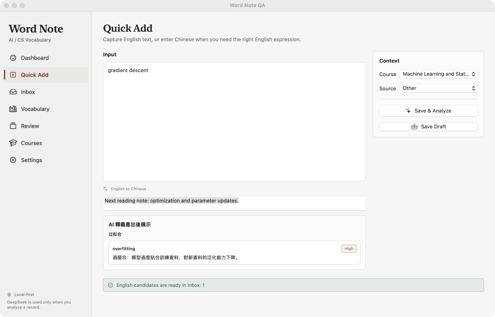
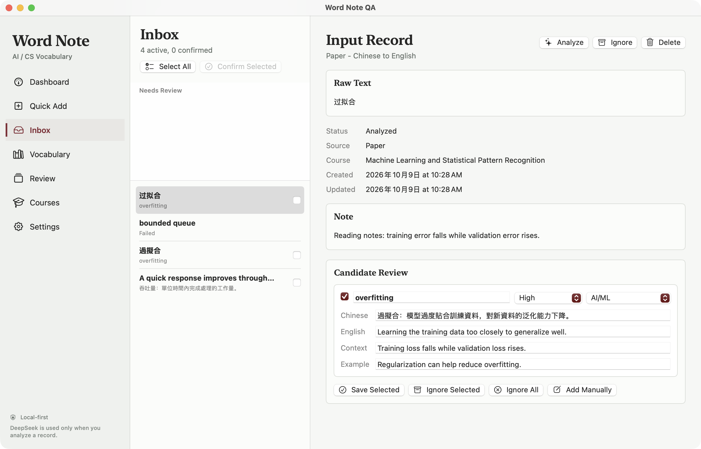
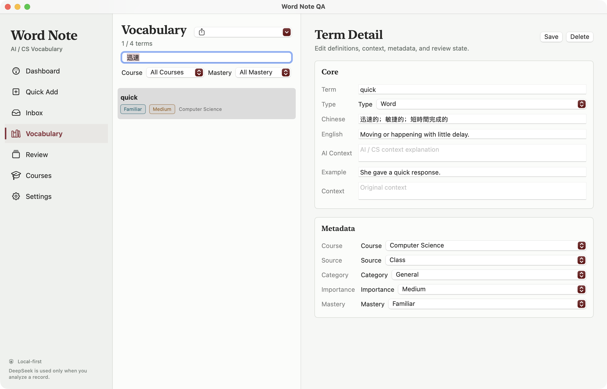
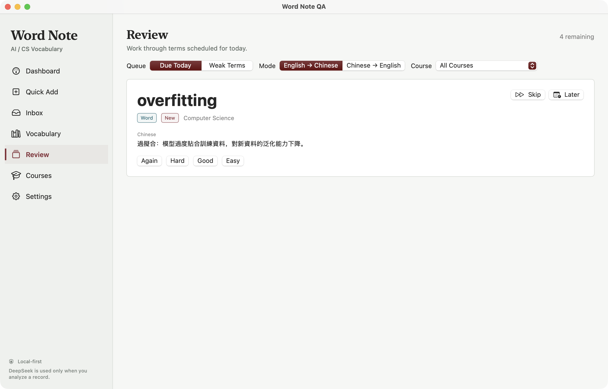

Word Note
我想把英文课程和阅读里遇到的词，留在自己的词本里。查过的释义、当时的语境和下一次复习，应该能接在一起。

以下六张图片拍摄于 2026-10-09，来自普通 V1 界面的隔离演示构建 WordNoteQA。使用演示词库与离线预置 AI 响应，不含日常学习资料，也不代表实时模型质量或新版功能已完成验收。保留原始窗口与界面文字，点击可查看原图。
先记下来，继续读下去
做 Word Note 的起点，是我在英文课程、论文和技术资料之间切换时的一点不方便：一个词当时查懂了，过几天又遇见，却只记得“好像查过”。相比从一套固定词表开始，我更想留下自己真正碰到的词句，以及它为什么出现在那一页。
所以我把记录入口做得很轻。主窗口可以补课程、来源和备注，菜单栏则能打开一个小浮窗；先输入，保存并排队分析，再继续手头的阅读。精确命中已经收录的英文词时，直接复用本地释义，并把它提到待复习队列，不必为同一个词再请求一次模型。


输入也不必总从英文开始。只记得“过拟合”时，可以先用中文找英文表达；返回的 overfitting 仍然作为英文候选进入整理流程。上一条结果留着看，输入区可以继续写下一条，不需要一直守着一个等待中的对话框。


释义先放在 Inbox
我没有让 AI 生成完就直接写进正式词库。原始输入、课程和笔记先留在 Inbox，候选的中文释义、英文解释、语境和例句放在旁边，确认或修改后再收录。对于专业术语和多义词，这一步很有必要：模型给了一段流畅的解释，不代表它刚好符合我正在读的内容。
释义的要求也尽量朴素：先把词本身解释清楚，专业含义确实有区别时再补充。像 quick 这样的普通词，不需要为了显得“懂 AI”而硬加技术语境。没有合适的候选可以手动建词；分析失败则保留原文，留到之后重试。


只记得中文，也能找回来
词条留下来以后，还要能找得到。我保留英文词头、中文释义、英文解释和例句，也把课程与来源留在详情里。Vocabulary 可以按课程和掌握程度筛选；回到某门课时，不必在所有阅读笔记里重新翻一遍。
有时忘掉的恰好是拼写，所以搜索也覆盖中文释义，并兼容简繁体。输入“迅速”，就能找回 quick。这里做的是本地文本检索，不需要再让模型猜一遍；原来保存的文字也不会因为搜索而被改写。


给回忆留一点空白
复习页先把答案藏起来。可以从今日到期或薄弱词开始，按课程缩小范围，再选择英文回忆中文，或中文回忆英文。看见解释时觉得熟悉，和自己想得起来，毕竟是两回事。
揭晓后由自己选择 Again、Hard、Good 或 Easy，程序据此安排下次复习，不让 AI 替我判定“已经掌握”。暂时不想处理的词可以移到本轮末尾，或延后到明天。这里展示的是现有复习流程；按方向独立排程和可恢复会话仍在新版中验证，没有拿它们来解释这些截图。


小窗口背后的工程取舍
这个工具大部分时间应该安静地待在阅读旁边，所以我选择了原生 macOS：SwiftUI 组织主界面，AppKit 处理悬浮窗和输入补全，SwiftData 保存词库与学习记录。外观可以跟随系统，也可以单独选浅色或黑灰色深色主题，主窗口和浮窗保持一致。
- 01 / INPUT
先保存原文
新查询落到本地记录，再进入分析队列；不把输入只留在请求里。
- 02 / ANALYSIS
模型只给候选
解析结构化响应，检查英文词条与释义，再交给 Inbox 核对。
- 03 / VOCABULARY
确认后再学习
正式词库用于检索与复习，与未确认的分析结果分开保存。
我把排队分析和界面分开，主窗口与浮窗共用同一条队列。新查询先保存，单条失败不挡住后面的任务；程序重新打开时，也能找回未完成的记录。搜索、补全、查词方向和复习规则放在 WordNoteCore 里，AI 客户端可以替换为预置响应，便于在不调用付费服务的情况下检查流程。
目前做到哪里
Word Note 目前是从源码构建的本地 Mac 应用，没有提供安装包下载，也没有账号或云同步。已有词条的浏览、检索和复习可以离线进行；生成新释义需要联网，并使用自己的 DeepSeek API Key，调用会产生供应商费用。
本地优先不等于所有内容都不离开设备：主动分析时，本次输入和相关的课程名称、来源、备注会发送给 DeepSeek，不会把完整词库作为上下文。Key 保存在本机受权限限制的明文环境文件中，不是加密保险库。我希望这些边界是清楚的，而不是用一句“隐私安全”带过。
接下来我更在意的是长期使用的可靠性：整理时保护手工修改，备份恢复有清楚的预览，复习中断后能继续。相关新版功能已有实现和测试，仍有集成与实机验收待完成。我会先把这些日常细节打磨好，再考虑更大的功能范围。